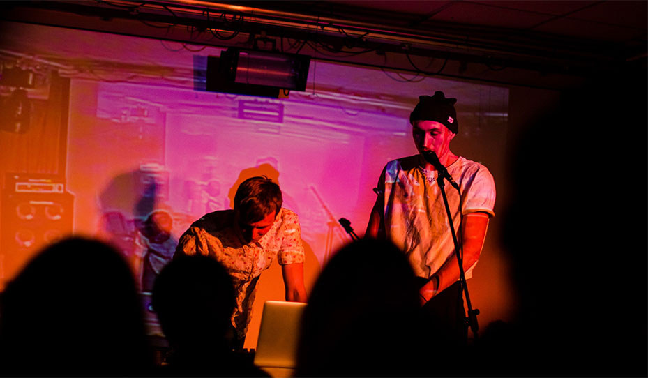

Театр «Прекрасные Цветы» существует в Харькове ровно пять лет. Девятого января Jazzter пережил вечеринку по случаю его Дня рождения. Слово «пережил» здесь не для красного словца или шутки ради. Всем, кто присутствовал на мероприятии от начала и до конца было не до смешков.
Театр «Прекрасные Цветы» существует в Харькове ровно пять лет. Девятого января Jazzter пережил вечеринку по случаю его Дня рождения. Слово «пережил» здесь не для красного словца или шутки ради. Всем, кто присутствовал на мероприятии от начала и до конца было не до смешков.
Затем RADIO-LADIO начало свое вещание. Это, если что, не только композиция Metronomy, но и концепт вечеринки. Хитрые театралы придумали, как сделать общение с гостями дистанцированным и сближающим одновременно. По задумке, именинники должны были сидеть в смокингах перед камерой в отдельном помещении, транслируя себя на экранах клуба. Шутить шутки, знакомить новичков с тем, что они наделали за последние 5 лет, а знакомым напоминать. Так должно было быть. На деле же перед экранами в зале стояли люди и проекция лица Артема Вусика то там, то здесь раскрывала рот на чьей-нибудь голове. При этом владелец головы методично вливал в себя шампанское и было немного жаль, что ребята сами не видят это фантасмагорическое действо – им бы понравилось.
На экране можно было в режиме реального времени увидеть видео- и фото-компромат на каждого из участников театра. Игоря Ключника с головой рыбы (или с рыбой на голове?). Парня, который 21 раз посетил спектакль «Крыса». Сергея и Снежану Бабкиных в образе Дракулы и его невесты. Звукорежиссера всех постановок Антона Малышева. Заслуженного деятеля культуры Владимира Минакова, который заведовал световым оформлением «Цветов». Ну и, конечно же, феноменальные кадры, на которых Оксана Черкашина держала в руках плитку шоколада без слез на глазах. В общем, всего понемногу. Познавательно.
Сергей Бабкин поиграл на гитаре и спел. Den Mitchell отыграли мини-концерт. Павел Алдошин спел и сыграл на гитаре, не подозревая, что через пару часов он сам снимет ботинки и примется танцевать.
Комический эффект вечера достигался многократным повторением. Шутка в том, что все было очень затянуто. В один момент общее томление прорвалось у парня, который не слишком тихо прошептал своей даме на ушко: «Трындец, как же долго». А ведь никто не расходился – слабаки! Обступили сцену, танцевали и пели. А происходило на ней следующее.
Каждый поздравлял, как мог. UNNEWSUAL отыграли мини-концерт. Urbanistan зачитали фристайл. Сергей Бабкин поиграл на гитаре и спел. Den Mitchell отыграли мини-концерт. Павел Алдошин спел и сыграл на гитаре, не подозревая, что через пару часов он сам снимет ботинки и примется танцевать. Олег Каданов пел в микрофон и ему подпевали. Где-то между выступлениями Инародный (нет, на этот раз не ошибка!) театр Воробушек подарил коллегам абсурдное поздравление.